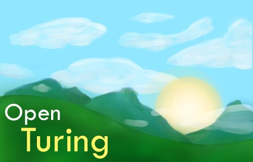

Turing Help
About
Open Turing is an open-source version of the original Turing interpreter for Windows by Holt Software. It includes speed improvements and new features such as OpenGL 3D. It is fully backwards compatible with the original Turing.

Open Turing
What's New in Open Turing
- An up to 40% speed increase
- Built in hash maps
- Basic OpenGL 3D
- Run from command line with
turing.exe -run file.t
- New splash and logo
Turing Language
Help for the Turing language is broken down into several parts.
Turing Environment
Help for the Turing environment consists of